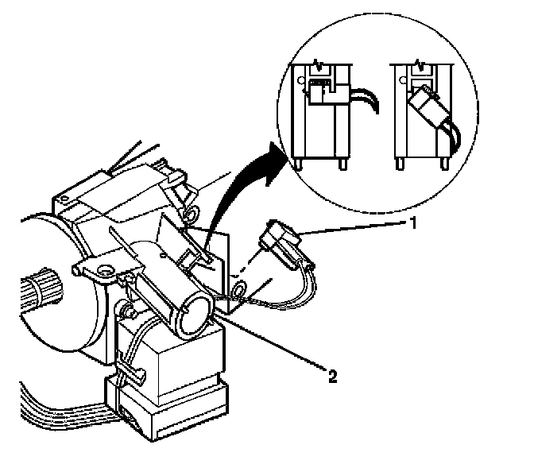
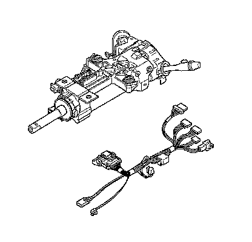

Steering Column Wiring Harness Replacement
Steering Column Wiring Harness Replacement
Removal Procedure
Caution: Refer to SIR Inflator Module Coil Caution .
1. Remove the theft deterrent module. Refer to Theft Deterrent Module Replacement (Service and Repair) .

2. Rotate the key alarm electrical connector (1) 90 degrees.
3. Gently pull the key alarm electrical connector (1) out of the ignition lock cylinder case (2).
4. Disconnect the ignition and start electrical connector from the ignition and start switch.
5. Disconnect the steering column wiring harness routing clips.
6. Disconnect all the steering column wiring harness electrical connectors as needed.

7. Remove the steering column wiring harness from the steering column.
Installation Procedure
1. Install the steering column wiring harness to the steering column.
2. Connect all the steering column wiring harness electrical connectors as needed.
3. Connect the steering column wiring harness routing clips.
4. Connect the ignition and start electrical connector to the ignition and start switch.
5. Gently push the key alarm electrical connector (1) into the ignition lock cylinder case (2).
6. Rotate the key alarm connector (1) 90 degrees so that the key alarm connector (1) locks into place.
7. Install the theft deterrent module. Refer to Theft Deterrent Module Replacement (Service and Repair) .